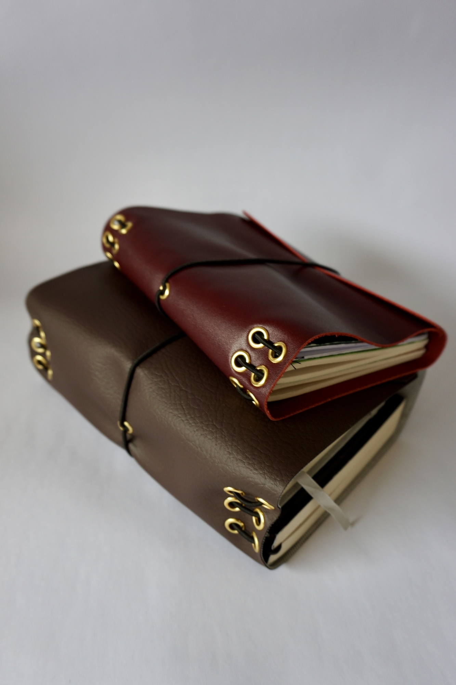

Productos
Cada objeto está pensado y hecho a pequeña escala, cuidando los materiales, el proceso y su uso en lo cotidiano. Los productos se realizan a pedido, respetando los tiempos y particularidades de cada pieza.
Fundas de cuero

Hecho a pedido
Fundas de cuero para cuadernos
Fundas inspiradas en el concepto del Traveler’s Notebook, pensadas para acompañar la escritura, el journaling y los procesos creativos en lo cotidiano.
Explorar fundas →